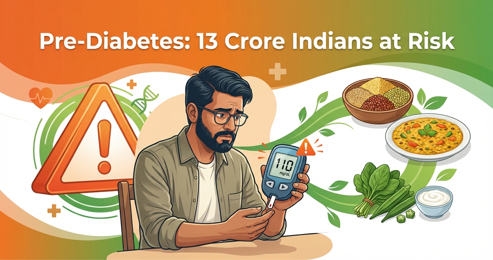

📑 Table of Contents
- What Is Pre-Diabetes?
- The Pre-Diabetes Crisis in India: Numbers That Should Alarm You
- Warning Signs & Symptoms of Pre-Diabetes
- How Is Pre-Diabetes Diagnosed? (ICMR & ADA Criteria)
- Who Is at Risk? Indian-Specific Risk Factors
- Can Pre-Diabetes Be Reversed? What Research Says
- Indian Diet Plan to Reverse Pre-Diabetes
- 7-Day Indian Meal Plan for Pre-Diabetics
- Exercise Plan: 150 Minutes That Can Save Your Life
- 10 Lifestyle Changes to Reverse Pre-Diabetes
- When to See a Doctor
- FAQs
Here's a statistic that should stop you in your tracks: over 13 crore Indians — roughly 1 in 6 adults — are pre-diabetic right now. And more than half of them have no idea.
Pre-diabetes is the body's last warning before Type 2 diabetes sets in. Your blood sugar is elevated, your insulin resistance is building, but you haven't crossed the threshold yet. Think of it as standing at the edge of a cliff — you can still step back.
The Indian government recognises the scale of this crisis. In the Union Budget 2026, diabetes was declared a "National Security Threat", with new policies including a Sugar Surcharge on ultra-processed foods and mandatory Clear Label rules for packaged items. These measures are a direct response to India's staggering pre-diabetes numbers.
The good news? Pre-diabetes is reversible. Unlike Type 2 diabetes, which requires lifelong management, pre-diabetes can often be completely reversed with the right diet and lifestyle changes — no medication needed in most cases. And Indian foods, when chosen wisely, are some of the best tools for this reversal.
This guide gives you everything you need: the warning signs, the diagnostic criteria, and — most importantly — a concrete, Indian-food-based action plan to bring your blood sugar back to normal.
1. What Is Pre-Diabetes?
Pre-diabetes (also called borderline diabetes in common Indian parlance) is a metabolic condition where your blood sugar levels are higher than normal but haven't reached the diabetic range. It's not a disease yet — it's a warning signal.
🔬 The Science Behind Pre-Diabetes
When you eat, your body breaks down carbohydrates into glucose. Insulin (a hormone from the pancreas) helps cells absorb this glucose for energy. In pre-diabetes:
- Insulin resistance develops — your cells don't respond well to insulin
- The pancreas overworks — it pumps out more insulin to compensate
- Blood sugar creeps up — but not enough for a diabetes diagnosis (yet)
- Beta cells start to tire — eventually, they can't keep up, leading to Type 2 diabetes
The critical difference between pre-diabetes and Type 2 diabetes is reversibility. In pre-diabetes, your pancreatic beta cells are stressed but still functional. In Type 2 diabetes, significant beta cell damage has already occurred. This is why acting during the pre-diabetes stage is so important — you're preserving your body's ability to regulate blood sugar naturally.
2. The Pre-Diabetes Crisis in India: Numbers That Should Alarm You
India isn't just the diabetes capital of the world — it's fast becoming the pre-diabetes capital too.
📊 India's Pre-Diabetes Numbers (2026)
- 13+ crore (136 million) Indians are pre-diabetic
- 15-20% of urban Indian adults have pre-diabetes
- 10-14% of rural Indian adults have pre-diabetes
- 50%+ of pre-diabetics are undiagnosed
- 15-30% of untreated pre-diabetics progress to Type 2 diabetes within 5 years
- ₹1.5 lakh crore estimated annual economic burden of diabetes on India's healthcare system
What makes India uniquely vulnerable?
- The "thin-fat" Indian phenotype: Indians tend to accumulate visceral fat (around organs) even at normal BMI. A person who looks slim can have dangerous levels of abdominal fat and insulin resistance. This is why BMI cutoffs used for Western populations don't work for Indians — the WHO recommends a lower BMI threshold of 23 kg/m² for overweight in Asian populations.
- Carbohydrate-heavy diets: The traditional Indian thali is 60-70% carbohydrates — rice, roti, potato sabzi. When combined with sedentary urban lifestyles, this drives insulin resistance.
- Genetic predisposition: South Asians have a 2-4x higher risk of developing diabetes compared to Europeans, even at the same BMI and activity levels.
- Rising ultra-processed food consumption: Packaged namkeens, biscuits, instant noodles, sugary drinks — consumption has tripled in Indian cities over the past decade.
- Declining physical activity: Only 34% of Indian adults meet WHO's minimum physical activity guidelines.
3. Warning Signs & Symptoms of Pre-Diabetes
Pre-diabetes is often called "silent" because most people don't notice symptoms. However, your body does give subtle clues — you just need to know where to look:
Early Warning Signs
- Acanthosis nigricans: Dark, velvety patches on the neck, armpits, or groin — this is one of the most reliable visible signs of insulin resistance
- Increased hunger after meals: You eat a full meal but feel hungry again within 1-2 hours (your cells aren't absorbing glucose properly)
- Fatigue after eating: Feeling sleepy or lethargic after lunch (post-meal glucose spike)
- Frequent thirst: Mild but persistent, especially after carbohydrate-heavy meals
- Brain fog: Difficulty concentrating, especially in the afternoon
- Slow wound healing: Small cuts or bruises taking longer than usual to heal
- Tingling in hands/feet: Occasional numbness or pins-and-needles sensation
- Frequent urination: Mild increase, especially at night
Associated Conditions (Red Flags)
- PCOS in women: Polycystic ovary syndrome is strongly linked to insulin resistance — if you have PCOS, get tested for pre-diabetes
- Fatty liver (NAFLD): Detected on ultrasound — 60-80% of people with fatty liver have insulin resistance
- Recurrent skin infections: Fungal infections, boils, or UTIs that keep coming back
- Unexplained weight gain: Especially around the abdomen (waist circumference >90 cm for Indian men, >80 cm for Indian women)
4. How Is Pre-Diabetes Diagnosed? (ICMR & ADA Criteria)
Pre-diabetes is diagnosed through simple blood tests. Here are the three diagnostic criteria:
| Test | Normal | Pre-Diabetes | Diabetes |
|---|---|---|---|
| Fasting Blood Sugar (FBS) | <100 mg/dL | 100-125 mg/dL | ≥126 mg/dL |
| 2-hr Post-Meal (OGTT) | <140 mg/dL | 140-199 mg/dL | ≥200 mg/dL |
| HbA1c | <5.7% | 5.7-6.4% | ≥6.5% |
Which test is best? HbA1c gives you a 3-month average and doesn't require fasting, making it convenient. But for Indians, OGTT (the 2-hour glucose tolerance test) is considered the gold standard because it catches impaired glucose tolerance — a pattern very common in the Indian population that fasting tests may miss.
How often to test:
- If results are normal: retest every 1-2 years
- If pre-diabetic: retest every 3-6 months to track progress
- If you have risk factors but normal results: test annually
5. Who Is at Risk? Indian-Specific Risk Factors
While anyone can develop pre-diabetes, certain factors significantly increase your risk. Here's an India-specific risk assessment:
High-Risk Indicators (Get Tested Immediately)
- Family history: Parent or sibling with Type 2 diabetes (doubles your risk)
- Abdominal obesity: Waist circumference >90 cm (men) or >80 cm (women)
- Age 30+: Risk increases sharply after 30 for Indians (earlier than Western populations)
- Sedentary job: Desk work with <30 minutes of daily physical activity
- PCOS or gestational diabetes history
- Hypertension: Blood pressure >140/90 mmHg
- Low HDL cholesterol (<40 mg/dL for men, <50 mg/dL for women) or high triglycerides (>150 mg/dL)
Moderate-Risk Indicators
- Urban lifestyle: Urban Indians have 1.5-2x higher pre-diabetes rates than rural populations
- High refined carb diet: Regular consumption of maida products, white rice >2 cups/day, sugary drinks
- Poor sleep: <6 hours or >9 hours regularly — disrupts glucose metabolism
- Stress: Chronic work stress elevates cortisol, driving insulin resistance
- Smoking: Increases insulin resistance by 30-40%
6. Can Pre-Diabetes Be Reversed? What Research Says
Yes — and the evidence is overwhelming. Pre-diabetes is one of the most reversible metabolic conditions when caught early.
- US Diabetes Prevention Program (DPP): Lifestyle changes (diet + exercise) reduced progression to Type 2 diabetes by 58% — more effective than metformin (31%)
- Indian Diabetes Prevention Programme (IDPP-1): Conducted on 531 Indian subjects — lifestyle modification reduced diabetes risk by 28.5% in Indian pre-diabetics
- Finnish Diabetes Prevention Study: 5-7% body weight loss + 150 min/week exercise achieved 58% risk reduction — effects lasted 10+ years after the study ended
- Da Qing Study (China): 30-year follow-up showed lifestyle intervention during pre-diabetes reduced diabetes incidence by 39% and cardiovascular death by 26%
The common thread across all these studies? You don't need to achieve perfection. Here's what consistently works:
- Lose 5-7% of body weight — for a 75 kg person, that's just 4-5 kg
- Exercise 150 minutes/week — 30 minutes × 5 days of brisk walking is enough
- Reduce refined carbohydrates — swap white rice for millets, maida for whole wheat
- Increase fibre and protein — dal, vegetables, nuts at every meal
7. Indian Diet Plan to Reverse Pre-Diabetes
The Indian diet, when modified correctly, is one of the best diets for reversing pre-diabetes. The key is strategic swaps, not complete overhauls:
🟢 Foods to Eat (Increase These)
| Food Group | Best Options | Why It Helps |
|---|---|---|
| Millets | Ragi (finger millet), jowar (sorghum), bajra (pearl millet), foxtail millet | Low GI (40-55), high fibre, slow glucose release. Ragi has 3x more calcium than rice |
| Dals & Legumes | Moong dal, chana dal, masoor dal, rajma, chole, sprouts | High protein + fibre slows glucose absorption. 1 cup cooked dal = 14g protein |
| Vegetables | Methi (fenugreek), karela (bitter gourd), palak, bhindi, lauki, turai | Methi seeds reduce fasting glucose by 13-25 mg/dL. Karela has plant insulin (polypeptide-p) |
| Healthy Fats | Mustard oil, cold-pressed coconut oil, ghee (1-2 tsp/day), nuts, flaxseeds | Slows carb absorption, improves satiety, supports hormone health |
| Low-GI Fruits | Guava, jamun, amla, papaya, orange, apple (with skin) | Jamun seeds specifically improve insulin sensitivity. Amla is one of the richest vitamin C sources |
| Dairy | Curd, buttermilk (chaas), paneer (in moderation) | Probiotics in curd improve gut health and insulin sensitivity |
| Spices | Turmeric, cinnamon (dalchini), fenugreek seeds (methi dana), curry leaves | Curcumin in turmeric improves insulin sensitivity. Cinnamon can reduce fasting glucose by 10-15 mg/dL |
🔴 Foods to Avoid or Limit
- White rice >1 cup per meal — replace with millets or mix 50:50 with brown rice
- Maida products: Naan, kulcha, samosa, white bread, biscuits, cake, pastries
- Sugary drinks: Packaged fruit juices, cola, sweetened lassi, chai with 2+ spoons sugar
- Deep-fried foods: Pakoras, puris, vadas — limit to once a week maximum
- Ultra-processed foods: Instant noodles, packaged namkeen, chips, ready-to-eat meals
- Hidden sugar sources: Ketchup (25% sugar), flavoured yogurt, health drinks like Bournvita/Horlicks
8. 7-Day Indian Meal Plan for Pre-Diabetics
🍽️ Day 1 — Monday
- Breakfast (8 AM): 2 ragi dosa + coconut chutney + 1 boiled egg
- Mid-morning (11 AM): 10 almonds + 1 guava
- Lunch (1 PM): 1 jowar roti + palak dal + cucumber raita + mixed veg sabzi
- Evening (4 PM): Masala chaas (buttermilk) + roasted chana
- Dinner (7 PM): Moong dal chilla (2) + mint chutney + salad
🍽️ Day 2 — Tuesday
- Breakfast: Vegetable poha (flattened rice with lots of veggies) + green tea
- Mid-morning: 1 small apple + 5 walnuts
- Lunch: 1 bajra roti + chana dal + bhindi sabzi + salad
- Evening: Sprout chaat with lemon and onion
- Dinner: Lauki (bottle gourd) soup + 1 multigrain roti + paneer bhurji (low oil)
🍽️ Day 3 — Wednesday
- Breakfast: Besan chilla (2) with veggies + curd
- Mid-morning: Handful of peanuts + 1 orange
- Lunch: Brown rice (½ cup) + rajma curry + turai sabzi + salad
- Evening: Roasted makhana (fox nuts) + green tea
- Dinner: Methi thepla (2) + curd + mixed veg soup
🍽️ Day 4 — Thursday
- Breakfast: Overnight oats with chia seeds, cinnamon, and nuts
- Mid-morning: 1 amla + handful of almonds
- Lunch: Foxtail millet pulao + chole + cucumber-tomato salad
- Evening: Masala chaas + roasted sunflower seeds
- Dinner: Palak paneer (low oil) + 1 ragi roti + salad
🍽️ Day 5 — Friday
- Breakfast: Idli (2, ragi-based) + sambar + coconut chutney
- Mid-morning: 1 guava + flaxseed powder in warm water
- Lunch: 1 jowar roti + masoor dal + karela sabzi (bitter gourd) + raita
- Evening: Roasted chana + green tea
- Dinner: Vegetable khichdi (dal + rice + veggies, 1:1 dal-to-rice ratio) + curd
🍽️ Day 6 — Saturday
- Breakfast: Stuffed paratha (methi/palak, minimal oil) + curd
- Mid-morning: Handful of mixed nuts + 1 small papaya slice
- Lunch: Bajra khichdi + kadhi + salad
- Evening: Sprout salad with lemon + roasted makhana
- Dinner: Grilled paneer tikka + mint chutney + mixed veg soup
🍽️ Day 7 — Sunday
- Breakfast: Daliya (broken wheat) upma with vegetables + green tea
- Mid-morning: 1 jamun (seasonal) or apple + walnuts
- Lunch: Millet biryani (foxtail/barnyard millet) + raita + mixed veg curry
- Evening: Masala chaas + handful of peanuts
- Dinner: Egg bhurji (2 eggs) + 1 multigrain roti + salad
- Keep dinner light and before 8 PM — a 12-hour overnight fast improves insulin sensitivity
- Add a 10-minute walk after every meal — this alone can reduce post-meal glucose by 15-25%
- Drink water 30 minutes before meals (not during) to improve digestion
- Start every meal with fibre — eat salad or sabzi first, then protein, then carbs
9. Exercise Plan: 150 Minutes That Can Save Your Life
Exercise is arguably more important than diet for reversing pre-diabetes. Here's why: a single session of moderate exercise improves insulin sensitivity for 24-48 hours. Consistent exercise can reduce HbA1c by 0.5-0.7% — equivalent to adding a diabetes medication.
Weekly Exercise Schedule for Pre-Diabetics
| Day | Activity | Duration | Benefit |
|---|---|---|---|
| Monday | Brisk walking | 30 min | Improves cardiovascular health, burns visceral fat |
| Tuesday | Yoga (Surya Namaskar + Pranayama) | 30 min | Reduces cortisol by 20-30%, improves insulin sensitivity |
| Wednesday | Brisk walking + bodyweight exercises | 35 min | Combines cardio + strength for maximum glucose uptake |
| Thursday | Yoga or swimming | 30 min | Low-impact, joint-friendly, stress relief |
| Friday | Brisk walking | 30 min | Consistency builds habit, targets belly fat |
| Saturday | Resistance training (bodyweight or bands) | 30 min | Builds muscle mass — muscle is the biggest glucose sink |
| Sunday | Active rest — light walk or stretching | 15-20 min | Recovery + maintains metabolic momentum |
Best Yoga Asanas for Pre-Diabetes
- Surya Namaskar (Sun Salutation): 12 rounds = full-body workout targeting core and visceral fat
- Dhanurasana (Bow Pose): Stimulates the pancreas, improves insulin production
- Paschimottanasana (Seated Forward Bend): Massages abdominal organs, helps digestion
- Mandukasana (Frog Pose): Direct pressure on the pancreas — practiced widely in Patanjali's diabetes protocol
- Kapalbhati Pranayama: 15 minutes daily shown to reduce fasting glucose by 15-20 mg/dL in 3 months
- Anulom Vilom: Reduces stress hormones (cortisol), indirectly improving insulin sensitivity
10. 10 Lifestyle Changes to Reverse Pre-Diabetes
Beyond diet and exercise, these evidence-backed lifestyle changes accelerate pre-diabetes reversal:
- Sleep 7-8 hours consistently: Sleeping <6 hours increases insulin resistance by 40%. Keep a fixed sleep schedule, even on weekends.
- Manage stress actively: Chronic stress elevates cortisol, which directly raises blood sugar. Practice 10 minutes of pranayama, meditation, or even just deep breathing daily.
- Reduce screen time after 9 PM: Blue light disrupts melatonin, which affects glucose metabolism. Use night mode or stop screens 1 hour before sleep.
- Drink 3+ litres of water daily: Dehydration concentrates blood sugar. Start each morning with warm water + lemon.
- Cut sugar in chai gradually: If you drink 3 cups with 2 spoons each, that's 18 teaspoons of sugar/day. Reduce by half a spoon every 2 weeks — your palate adjusts.
- Read food labels: The 2026 Clear Label mandate helps, but actively check for hidden sugars (sucrose, dextrose, maltodextrin, corn syrup) in packaged foods.
- Eat dinner before 8 PM: Late eating disrupts circadian glucose metabolism. A 12-hour overnight fast is one of the simplest interventions for insulin sensitivity.
- Quit smoking: Smoking increases diabetes risk by 30-40%. Quitting reverses this within 5-10 years.
- Limit alcohol: More than 2 drinks/day increases diabetes risk. If you drink, choose dry wine over beer or sugary cocktails.
- Monitor your numbers: Buy a home glucometer (₹500-1500). Test fasting blood sugar weekly. Tracking creates accountability.
11. When to See a Doctor
While lifestyle changes are the first-line treatment for pre-diabetes, see a doctor if:
- Your fasting blood sugar is consistently above 115 mg/dL despite 3+ months of lifestyle changes
- Your HbA1c is rising (moving from 5.7% towards 6.4%)
- You have multiple risk factors — family history + obesity + PCOS/fatty liver
- You experience symptoms: Persistent fatigue, blurred vision, frequent infections, unexplained weight loss
- You're planning pregnancy: Pre-diabetes increases gestational diabetes risk — get it under control before conception
What to Ask Your Doctor
- "What's my current HbA1c and fasting blood sugar?"
- "Do I have insulin resistance? Can we check fasting insulin levels?"
- "Should I get tested for fatty liver (ultrasound)?"
- "How often should I retest?"
- "Do I need metformin, or can I try lifestyle changes first?"
- "Should my family members get screened too?"
📊 Track Your Pre-Diabetes Reversal Journey
Download our free blood sugar tracking journal — log your daily fasting glucose, meals, and exercise to see your progress in real time.
Download Free Blood Sugar Journal →12. Frequently Asked Questions
Q: Is pre-diabetes the same as borderline diabetes?
Yes, "borderline diabetes" is the common term for pre-diabetes in India. Medically, they refer to the same condition — blood sugar levels that are above normal but below the diabetic threshold (FBS 100-125 mg/dL or HbA1c 5.7-6.4%).
Q: How long does it take to reverse pre-diabetes?
Most people can bring their blood sugar back to normal within 3-6 months of consistent lifestyle changes. Some see improvement in as little as 4-6 weeks. The key factors are: maintaining a caloric deficit (if overweight), exercising 150+ minutes/week, and replacing refined carbs with millets and whole grains.
Q: Can I eat rice if I'm pre-diabetic?
Yes, but in moderation. Limit white rice to ½ cup per meal and pair it with dal, sabzi, and raita to lower the meal's overall glycaemic impact. Better options: replace white rice with brown rice, millet rice (ragi/jowar), or do a 50:50 mix. Avoid eating rice alone — always combine with protein and fibre.
Q: Is jaggery (gur) safe for pre-diabetics?
No. Jaggery has a GI of 65-85 (similar to sugar) and raises blood sugar almost as quickly. Despite being "natural," it's still sugar. If you need a sweetener, use stevia (zero GI) or very small amounts of honey (½ teaspoon).
Q: Can thin people get pre-diabetes?
Absolutely. Up to 30% of Indian pre-diabetics have a normal BMI. The "thin-fat" Indian phenotype means you can have dangerous visceral fat around organs while appearing slim. Waist circumference is a better predictor than BMI — if it's >90 cm (men) or >80 cm (women), get tested regardless of weight.
Q: Does pre-diabetes always become Type 2 diabetes?
No. Without intervention, 15-30% of pre-diabetics develop Type 2 diabetes within 5 years. But with lifestyle changes, up to 58% can reverse it completely. The earlier you act, the better your chances. Pre-diabetes is a fork in the road — not a one-way street to diabetes.
🥗 Start Your Pre-Diabetes Reversal Today
Get our free Indian diabetes-friendly meal plan designed specifically for pre-diabetics. 7 days of meals, shopping list included.
Download Free Meal Plan →Disclaimer: This article is for educational purposes only and does not replace professional medical advice. If you suspect you have pre-diabetes, consult a qualified healthcare provider for personalised guidance. Always discuss dietary changes with your doctor, especially if you are on medication.